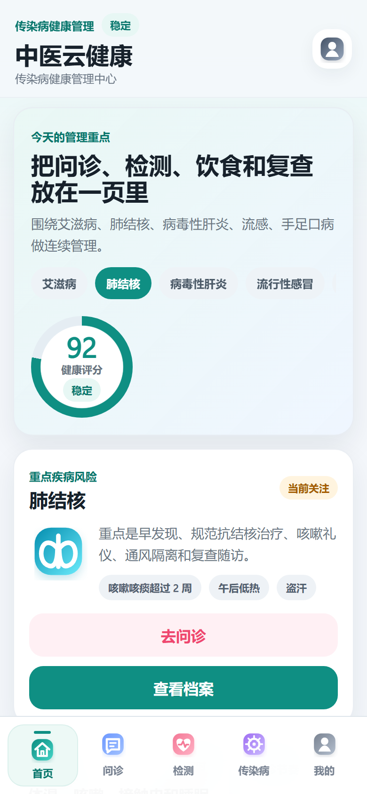
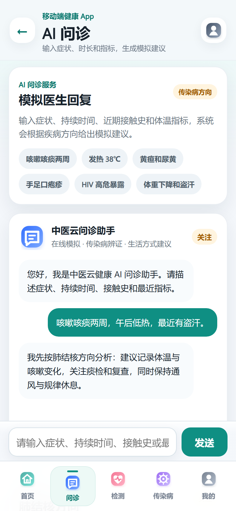
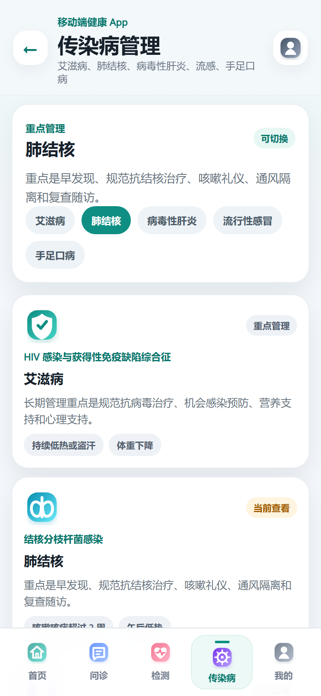

TCM CLOUD HEALTH APP
传染病健康管理，进入移动端日常。
围绕艾滋病、肺结核、病毒性肝炎、流感、手足口病，把风险提示、AI 问诊、健康检测、疾病档案和康复管理串成一套可运行 App。



肺结核 · 当前关注
健康评分 92
PRODUCT VALUE
它解决的不是“页面有没有”，而是用户每天怎么管理。
产品介绍页把场景讲清楚：先看风险，再问诊和检测，最后沉淀到随访和康复动作里。
看见风险
首页把健康评分、重点疾病风险和待办放在最前面，用户进入后直接知道今天该关注什么。
获得建议
AI 问诊把模糊症状转成结构化信息，输出辨证思路、生活建议和就医提醒。
持续随访
检测、档案、膳食、运动和讲堂内容连成恢复闭环，支持连续健康管理。
APP EXPERIENCE
首页像健康指挥舱，而不是菜单页。
评分、风险、待办、入口和检测摘要在首屏完成优先级排序。
INFECTIOUS DISEASE SCENARIO
面向传染病方向，场景要比功能更重要。
点击疾病标签，页面会切换风险重点、日常动作和就医提醒，体现产品不是百科堆叠。
肺结核
重点是早发现、规范抗结核治疗、咳嗽礼仪、通风隔离和复查随访。
- 持续咳嗽或低热时及时检测
- 记录服药、复诊和体重变化
- 提醒通风隔离和就医红旗症状
DELIVERY PIPELINE
轻量实现，但交付链路完整。
本地 mock 和 localStorage 支撑演示闭环，Capacitor 负责同步 Android 项目和 APK 测试。